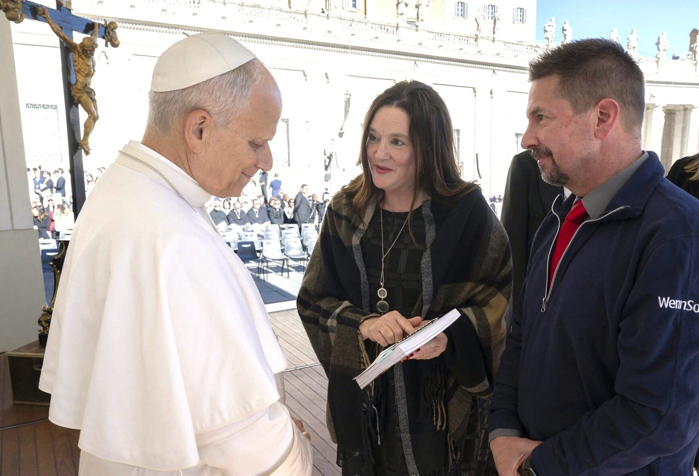
Pope Leo XIV
November 5, 2025Roxane and her husband Troy met the Holy Father in St. Peter's Square during a pilgrimage to Rome — a golden-ticket moment she has written about since.
Writer, speaker, radio and podcast host — but most importantly, a mother and wife journeying to heaven with her family
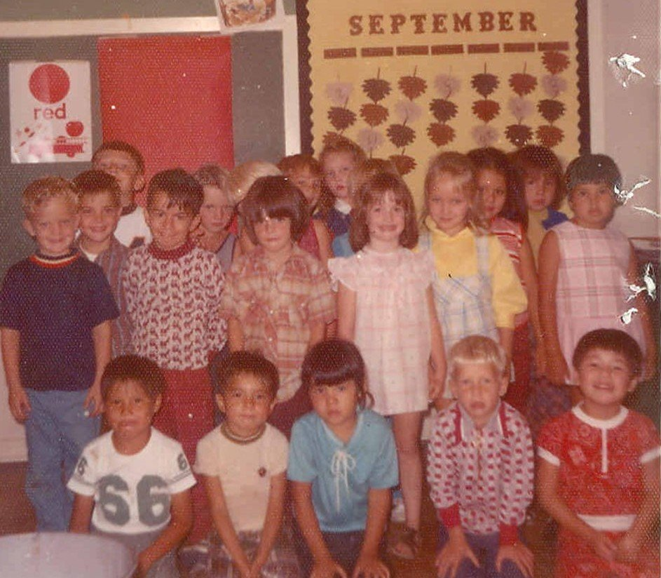
Kindergarten · Poplar, Montana, September 1972 — Roxane in the pink dressRoxane Salonen’s heart was first formed as the daughter of teachers on the Fort Peck Reservation in northeast Montana. There on the dusty Plains, her imagination developed through her father’s lively bedtime stories.
As a teen, Roxane was pointed toward journalism, and her desire to dwell in the world of stories stayed strong throughout college. Her newspaper career launched in Washington state, but five years later, Roxane, new baby in tow, plotted a move with her husband back to North Dakota. There, her career flourished in the rich soil of the Red River Valley, and her heart widened to include four more Salonen children, now grown with lives of their own. With her husband, Troy, nearby she still regularly churns out faith articles for her state’s largest daily, yearning to bring truth more vividly into the world.
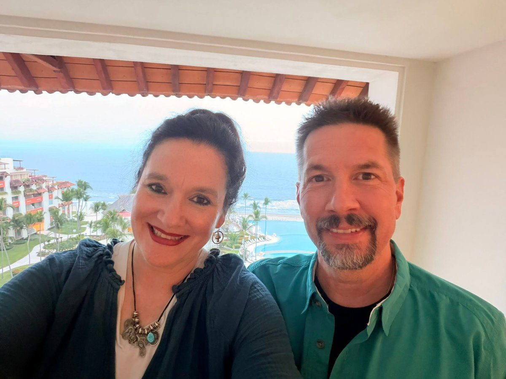
With Troy · Puerto Vallarta, Mexico, 2025Music is another petal that clings to her center. She and Troy met in the Center for the Arts at their alma mater, Moorhead State University, in Moorhead, Minnesota, where they both sang in concert choir. Now a cantor at Sts. Anne & Joachim Catholic Church in Fargo, North Dakota, Roxane enjoys praising God through song.
An introvert, Roxane still loves mingling with people and the world around her, but when the chatter subsides, she’s happiest reading, going on nature walks with friends, and relaxing with her family, including cat Skittles and dog Zoey. And sometimes, when a big deadline looms, she slips away to the quiet of a cloistered Carmelite monastery, where she soaks in the peace to bring home.
Each role Roxane steps into adds a petal to the whole flower. But of all the roles she assumes, the one that started it all, and goes deepest, is daughter of God, which brings meaning to all the rest.
Wife, mother, coffee sipper, flower gazer, sunset lover.
Roxane and her husband Troy met the Holy Father in St. Peter's Square during a pilgrimage to Rome — a golden-ticket moment she has written about since.
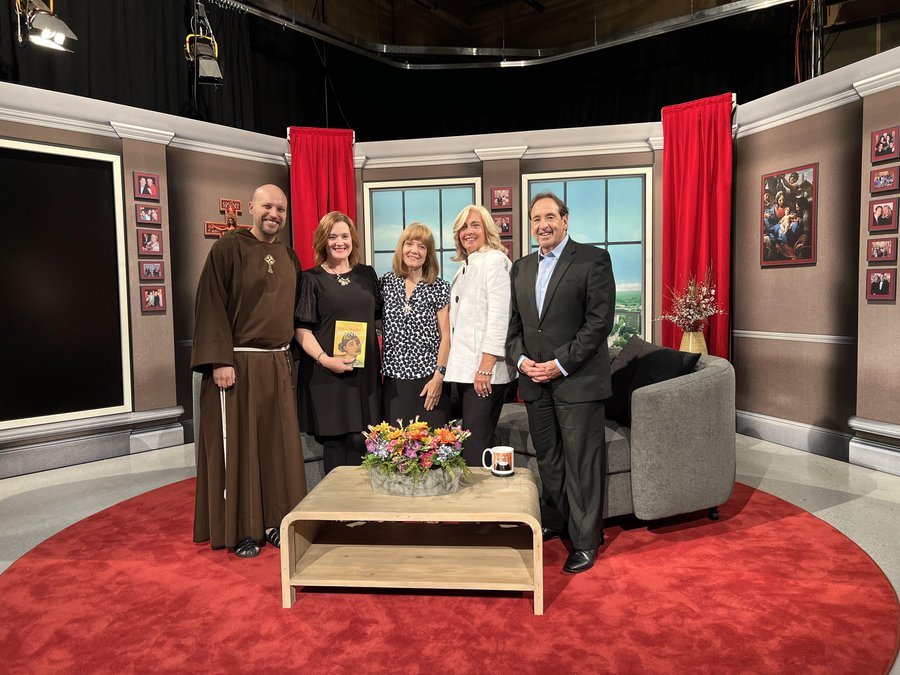
On the set of EWTN's Jim and Joy, What Would Monica Do? in hand.
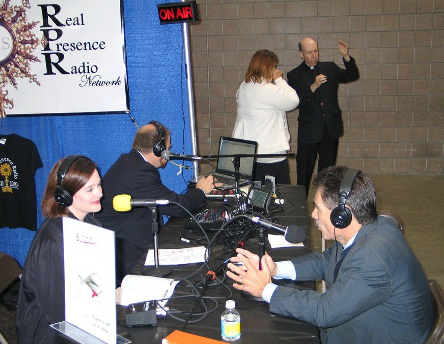
On air with the EWTN psychologist with Real Presence Radio at the 2010 Marian Eucharistic Congress in Fargo.
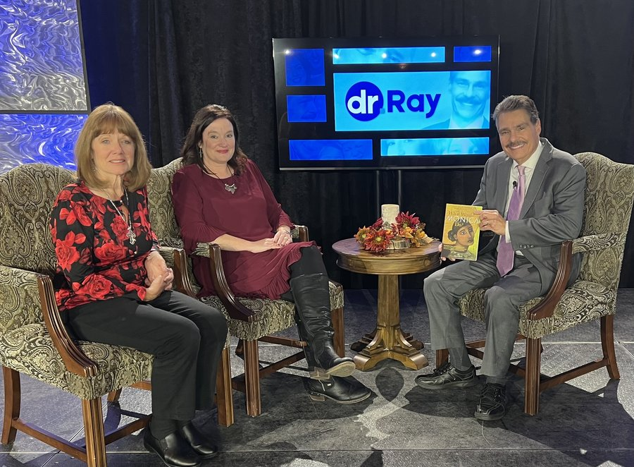
Fourteen years later — back with Dr. Ray, this time alongside co-author Patti Maguire Armstrong at Sts. Anne & Joachim in Fargo.

At the launch of the Marriage Reality Movement.
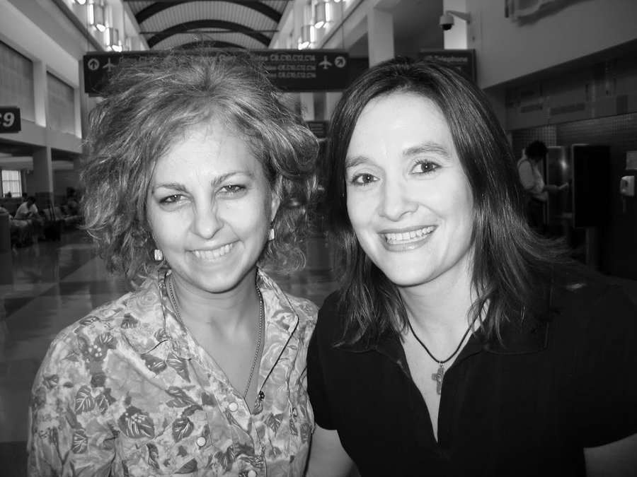
The Newbery Medal–winning children's author — two storytellers crossing paths.
The priest-chef behind Grace Before Meals.
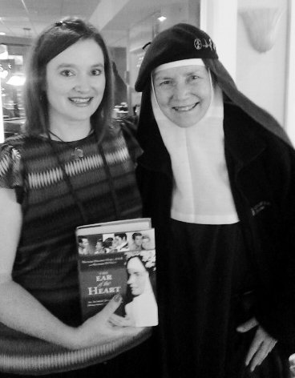
The Hollywood actress turned Benedictine nun, with her memoir The Ear of the Heart.
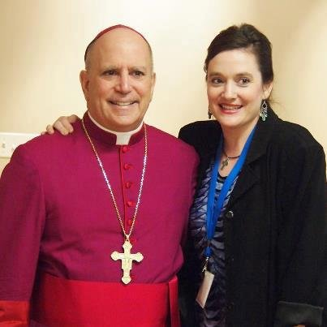
Fargo's former bishop, now retired Archbishop of Denver.
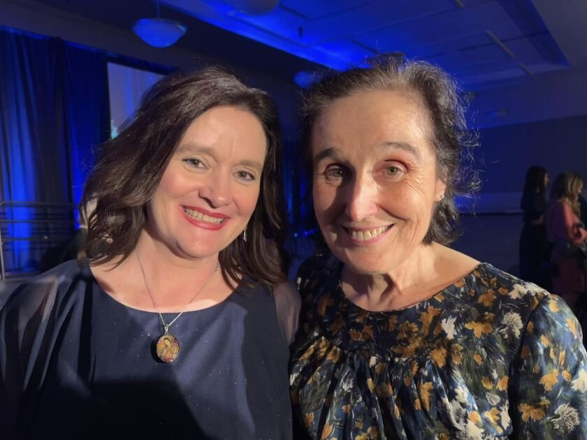
Daughter of St. Gianna Beretta Molla.
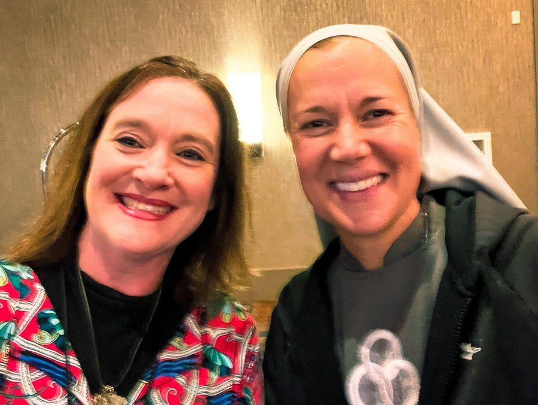
The SOLT sister, speaker, and Abiding Together podcast co-host.
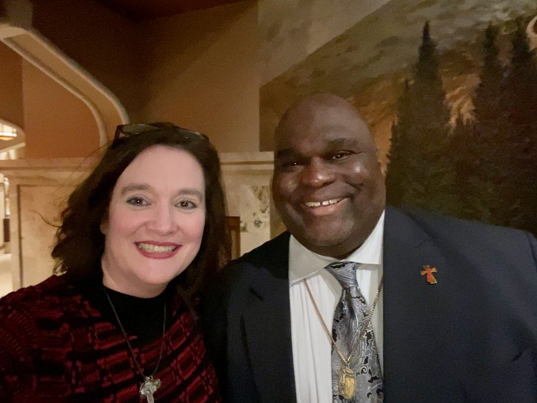
Known as the Dynamic Deacon — international speaker, author, and radio host — after an evening event in Fargo.

With the theologian and author at the National Eucharistic Congress.
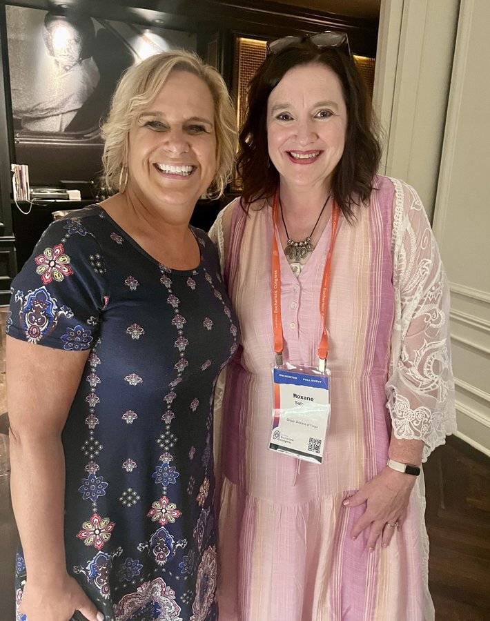
The Catholic author and podcast host, at the National Eucharistic Congress.
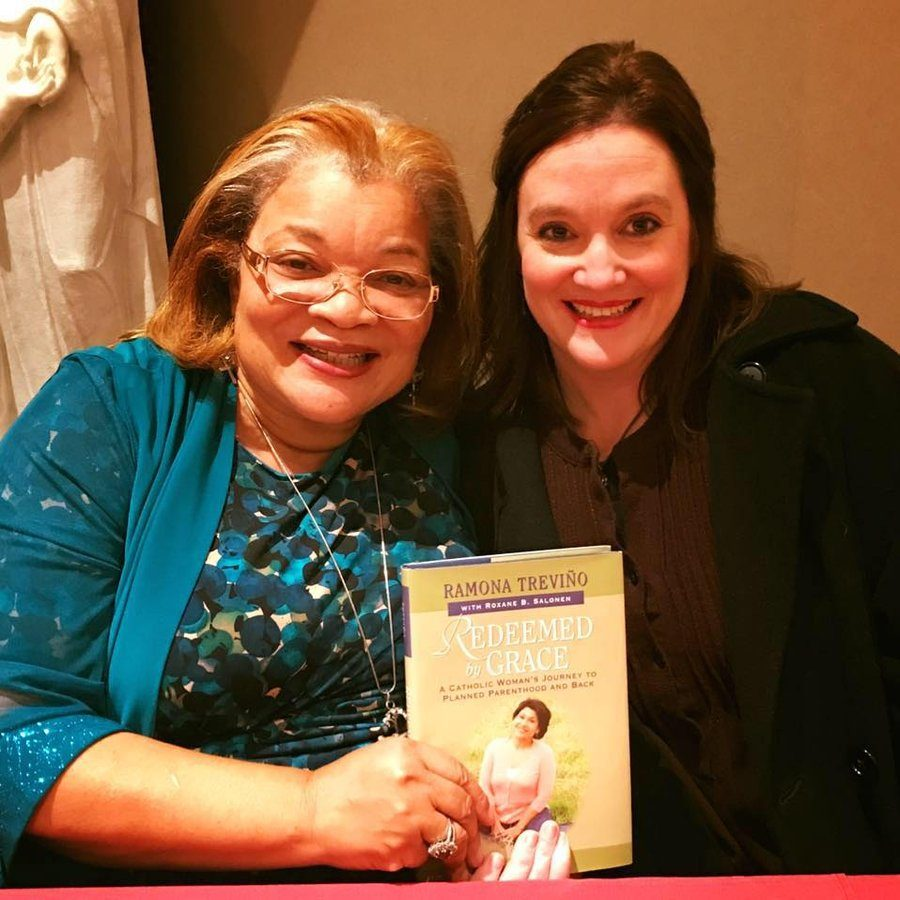
The pro-life advocate and niece of Dr. Martin Luther King Jr. — Redeemed by Grace in hand.
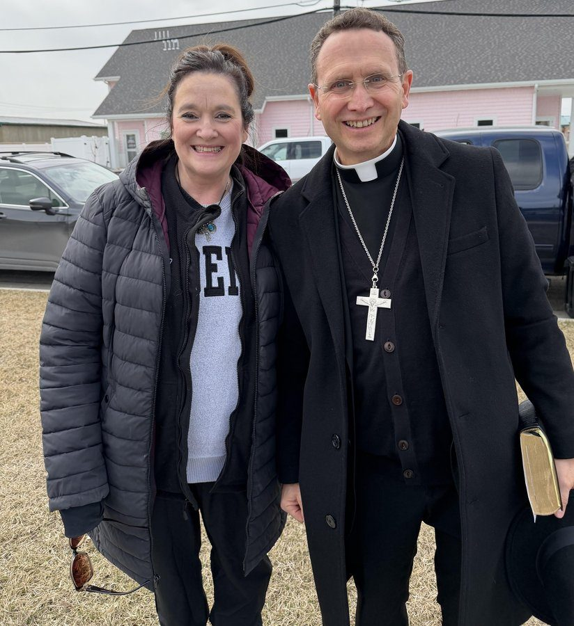
The Bishop of Crookston, who led the National Eucharistic Revival.
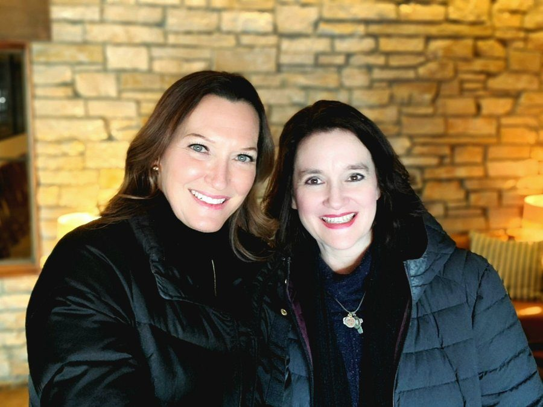
The chemist-turned-Catholic author and educator.
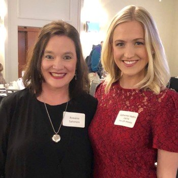
The EWTN host, then anchoring Pro-Life Weekly.
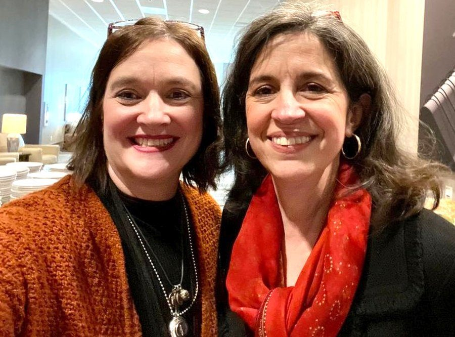
The law professor, author, and speaker.